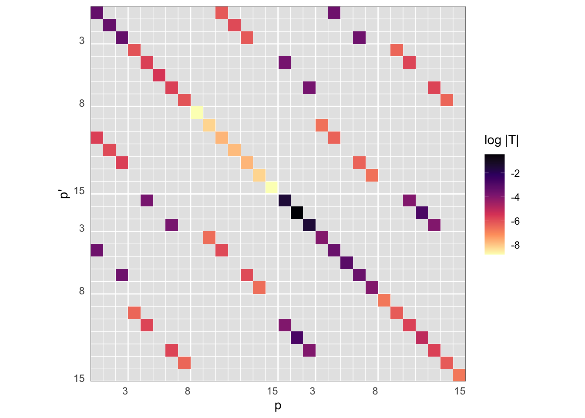
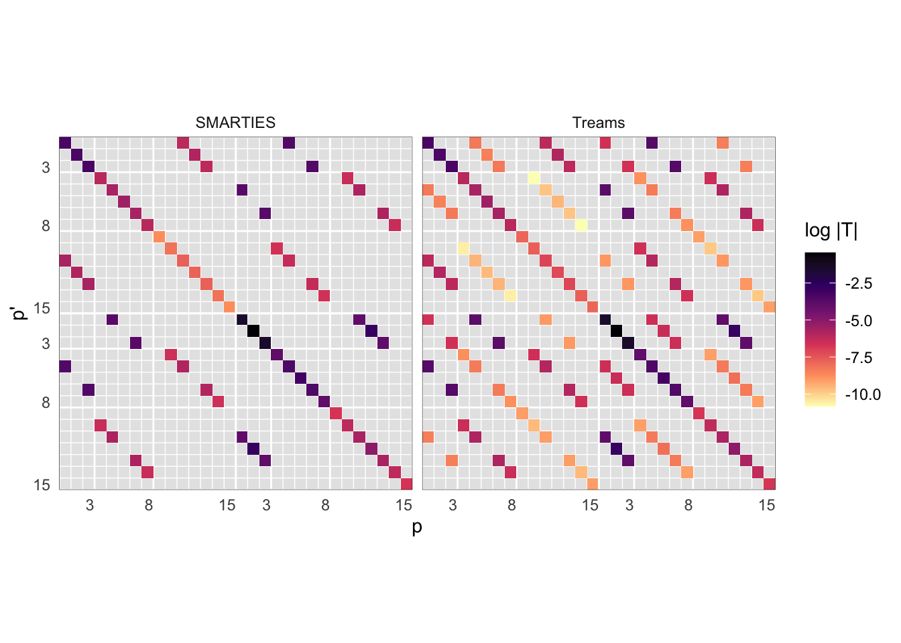

d <- read.table('data/tmat_Au20x40_Nmax3.tmat')
names(d) <- c('s','sp','l','lp','m','mp','Tr','Ti')
d <- tmatrix_combinedindex(d)Displaying T-matrices with R
R utility functions used below.
The following R code produces a visual heatmap of a T-matrix with a standard 2x2 block matrix layout and indexing conventions.
Example data in long format:
Custom visualisation:
lmax <- max(d$l)
breaks <- tmatrix_breaks(lmax)
p <- ggplot(d, aes(q, qp, fill= log10(Mod(Tr + 1i*Ti)))) +
geom_raster() +
coord_equal() +
scale_fill_viridis_c(option = 'A', direction = -1) +
annotate('segment',x=0.5,xend=max(breaks$breaks)+0.5,y=max(breaks$breaks)/2+0.5,
yend=max(breaks$breaks)/2+0.5,colour='white')+
annotate('segment',y=0.5,yend=max(breaks$breaks)+0.5,x=max(breaks$breaks)/2+0.5,
xend=max(breaks$breaks)/2+0.5,colour='white')+
scale_y_reverse(expand=c(0,0), breaks= breaks$breaks+0.5, minor_breaks=breaks$minor_breaks+0.5, labels=breaks$labels) +
scale_x_continuous(expand=c(0,0), breaks= breaks$breaks+0.5, minor_breaks=breaks$minor_breaks+0.5, labels=breaks$labels) +
theme_minimal() +
theme(panel.grid = element_line(colour = 'white'),
panel.background = element_rect(fill='grey90',colour='white'),
panel.border = element_rect(colour='black',fill=NA,linewidth = 0.2),
axis.text.x = element_text(hjust=1),
axis.text.y = element_text(vjust=0)) +
labs(x="p",y="p'",fill=expression(log~"|T|"))
print(p)
Note that ggplot2 makes it easy to plot multiple facets to compare different datasets,
# combine data with another T-matrix from Treams
d2 <- read_treams('data/SPH-DE~4.H5')
m <- rbind(mutate(d, type = "SMARTIES"),
mutate(d2[,names(d)], type = "Treams"))
# update the plot with these data, and facet by type
p %+% m + facet_wrap(~type)